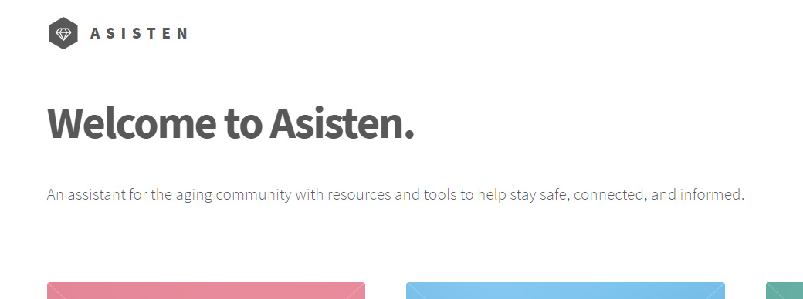

Project Name: Asisten
Overview-
The Asisten (Japanese for assistant) program is an independent tool for the purpose of delivering information, developing skills, a means of reporting, and increasing the safety and wellbeing of those in the aged community and their families. With a strong focus on informing and protection from abuse and fraud. The Asisten Project aims to be easy to use tool to cater for those unfamiliar with technology and those with accessibility needs. The Asisten Project will amalgamate information from advocacy groups and government bodies into one accessible site taking the confusion of having too many resources to follow.
Motivation-
According to the Australian Government and the Australian Institute of Family Studies “it is likely that between 2% and 14% of older Australians experience elder abuse in any given year, with the prevalence of neglect possibly higher.” (Australian Institute of Family Studies, 2018). The concern of elder abuse is increasing as our aged population grows. According to the Australian Competition and Consumer Commission (ACCC), in 2017 they noted more than 200,000 scams with a reported loss of $340million (Australian Competition & Consumer Commission, 2018). The government has only a single department when it comes to scamming and of that one department, they only have one dedicated scamming watchdog, with none strictly focusing on aged peoples. There are numerous advocacy groups with the intent of protection. The motivation of the Asisten Program is to amalgamate all the information to a platform that can easily digest and give the help where needed on a personal level.
Description-
Asisten aims to help identify and educate about human rights. This will include information about the UN declaration of human rights. Protective legislation such as Age discrimination. As well as other legal documentation regarding other content on the site, including abuse and fraud.
Abuse: There will be information as well as contact information to interested parties regarding the several avenues of abuse. At times, those in aged care are not aware of what consists of abuse. This section is aimed at empowering through knowledge. There will be broken down sections focusing on physical, sexual, verbal/emotional, mental/ psychological, financial/ economical, and cultural/ identity. Along with this information to identify the different types of abuse will be tools to stay safe and contact methods for different authorities that can be contacted.
Fraud: This section will cover in detail the different kinds of fraud that are common with the aged community and those vulnerable. Modern scammers are using digital techniques to target the not knowing or vulnerable. According to the National Council on Aging (NCOA) (Elderly Fraud Scams: How They’re Being Targeted and How to Prevent It, 2020), some of the top scams targeting seniors include the following:
• Medicare: Scammers will try to obtain personal information to then set up fake billing.
• Counterfeit prescription drugs: As the prices of medication increases seniors are turning towards online ordering. These items received may not be the real thing and can in fact cause more damage.
• Funeral: scammers will obtain information regarding wills and estates and use that information to extort money from grieving family members.
• Anti- Aging products: Same as counterfeit drugs. May not be the real product and cause injury and death.
These are just some of the listed items, but the list continues. Asisten aims to help identify these scams before any information or monies are handed over. With emerging technology there have been a rise in digital scamming. This can include social media, ATMs, and email. Identifying and protecting against illicit activities is a key component to the Asisten Project in keeping those in our aged community safe. The biggest component to Asisten is a live Help feature. This component will connect you to someone (advocacy?) that will have all the information and advice at their fingertips. This is a proactive attempt to stop illicit activity before it can even happen. If for any moment someone questions perhaps a transaction; or a worrying phone call; or a new stranger who wants something, they can use this function to talk to someone live to answer their questions and give out advice. If illicit activity is to be suspected, then the helpers on the live help can contact authorities on your behalf. The live Help feature can also act as a reporting agent. If someone has become a victim to an assault or any other type of abuse, the lovely workers on the Asisten Project can take information and make a report to the appropriate authorities.
Tools and Technologies –
So far, the idea is just a web feature. A website with an App sidekick. The mockup I have made is a simple HTML based site. The reason for this is my current skill set and market availability. This sort of thing really does not exist in Australia. Using a website and App is the most accessible way. The technology behind the live chat feature is still in research as I do not really know how that would work. It would have to be a human behind it to handle such delicate information.
Skills Required-
Skills required would be those of a web developer. This includes Web hosting (WHM, cPanel). Solid knowledge of CCS, HTML, and CMS. I have also used some jQuery for animation. Understanding of PHP and Java, as well as any other coding requirements for app creation. There would be a need for knowledge in creative suites such as photoshop. I used photoshop to create the splash panel artwork.
Outcome-
If this project were to come into fruition, it would basically be creating some sort of advocacy company with perhaps some government funding? (would be nice). It would need to be staffed by suitable people especially for the live chat function. Which I guess would also end up including phone help as well. The original problem will not be solved as it cannot be solved. It is crime and crime will always keep on keeping on. It will however put a powerful tool in the hands of the most vulnerable and naive. The impact of the project would be again a powerful tool that anyone who is in the aged community and their families, anyone in aged care (including businesses) can use day to day to ensure that everyone is informed, safe, and secure.
Refrences
Acfe.com. 2020. Elderly Fraud Scams: How They’Re Being Targeted And How To Prevent It. [online] Available at: https://www.acfe.com/fraud-examiner.aspx?id=4294997223 [Accessed 16 June 2020]
Australian Competition & Consumer Commission, 2018. Targeting Scams. Canberra: Australian Competition & Consumer Commission.
Australian Institute of Family Studies, 2018. Elder Abuse Understanding Issues, Frameworks And Responses. Canberra: Australian Institute of Family Studies.
Please click the button below to visit the sample site